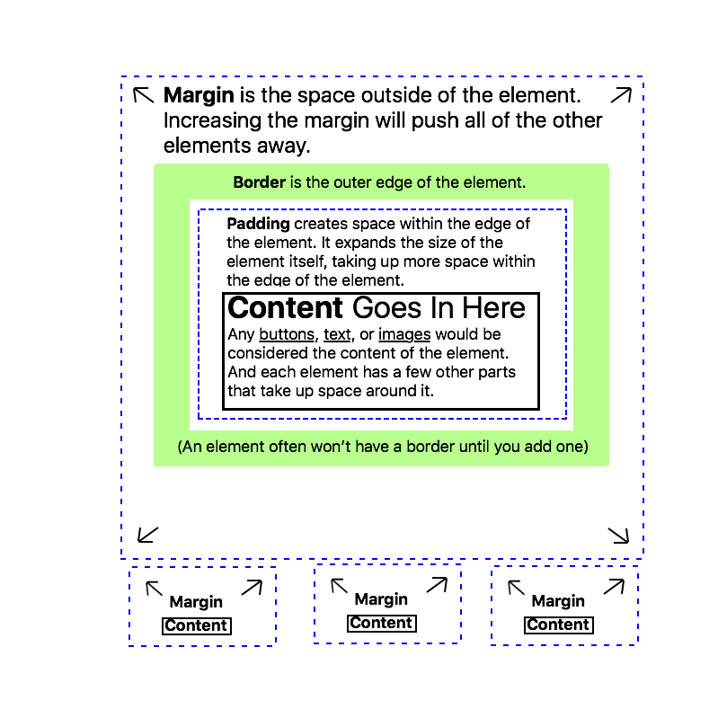
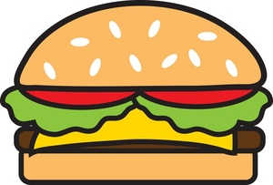
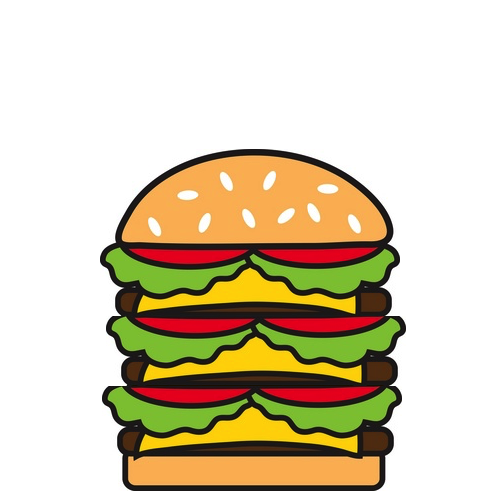
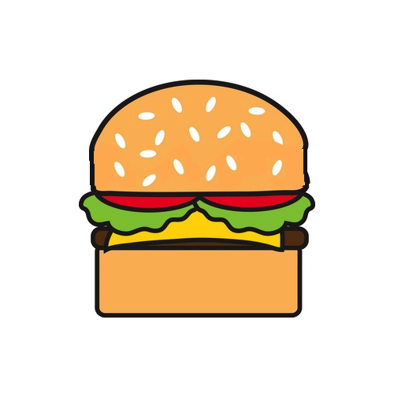
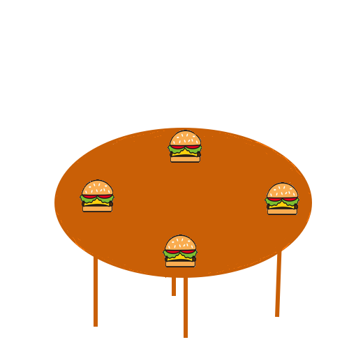

The Basics
Here's a variation on a diagram that is commonly used to illustrate these concepts:
I thought it might also help illustrate the point to consider an analogy. Like, what if HTML elements were burgers?
Here is a basic HTML burger with all of my favorite toppings. Nothing unusual here.
Now, let's say we wanted to increase the amount of content in an HTML element. Perhaps add more text, or make a button bigger or something. That would be like adding more delicious ingredients inside of your burger. As you can see here.
Then, what does it mean to increase the padding? It's kind of like making the bun of the burger thicker. It doesn't actually efect the content of the element (or the meat and toppings in your burger), but the element (and burger) will grow in size.
Lastly, what does it mean to increase the margin? That increases the amount of space around the HTML element, and pushes all the other elements away. Sort of like the burger is set on a big table, and all the other bugers are put farther away.
